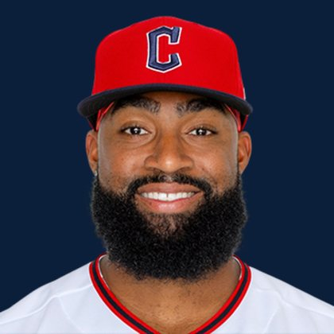

BASEBALLKEEP
Dynasty · Redraft · Diamond
Player File · OF LAA

Jo Adell
#7 · OF · Cleveland Guardians · age 27 · B/T RR · 6' 2" / 215 lbs · MLB debut 2020 · Shelby, USA
Hitting
| Year | G | AB | R | H | 2B | HR | RBI | SB | BB | SO | AVG | OBP | SLG | OPS |
|---|---|---|---|---|---|---|---|---|---|---|---|---|---|---|
| 2026 | 124 | 469 | 52 | 111 | 20 | 19 | 73 | 3 | 21 | 124 | .237 | .290 | .405 | .695 |
| 2025 | 152 | 526 | 63 | 124 | 18 | 37 | 98 | 5 | 33 | 151 | .236 | .293 | .485 | .778 |
Plus
- Keep #147 on the 300. Tradable, not a 1.01.
- On 13 boards — not a one-list darling.
Minus
- The rank is the comment until the next IL stint.
BaseBallKeep Take
Jo Adell is #147 on BaseBallKeep's overall dynasty 300, a 23-source mix anchored by RotoGraphs (Aug 14) and The Dynasty Guru points list (Aug 10). OF for LAA. Lineup #105. Rest-of-season redraft #144. MLB since 2020. From Shelby / USA. Bats R, throws R.
BK Value on this rank is 439. Same decaying curve as football: 12,000 at 1.01, a late first a fraction of that. If someone is asking for two firsts, run the calculator. 2026 line: .237 / 19 HR / 3 SB / .695 OPS in 124 games.
The 23-board average is 144.54 on 13 lists that actually ranked him — unranked sources are skipped, never treated as 999. High 135, low 153.
Dynasty pays the next five years. Redraft pays September. If those two ranks diverge, that is the instruction: hold the kid or cash the veteran.
Flags fly forever. We will refresh this file with The Keep. September baseball is a proving ground, not a coronation.
Every Board
Spread 135–153 · 13 sources
| Source | Rank |
|---|---|
| RotoWire | 135 |
| FanGraphs The Board | 135 |
| RotoGraphs Model | 137 |
| Razzball | 143 |
| Ottoneu | 143 |
| FantasyPros Dynasty ECR | 144 |
| ESPN | 145 |
| NFBC ADP | 145 |
| ATC ROS | 145 |
| Dynasty League Baseball | 148 |
| TDG Points | 153 |
| Baseball Prospectus | 153 |
| The Dynasty Dugout | 153 |
On the Wire
Redraft Wire P31: Power stream. Ignore the team, take the homers.
On The Keep nearby — Joshua Baez (#145) · Steven Kwan (#146) · Moisés Ballesteros (#148) · Luke Keaschall (#149)
Same position on the 300 — Juan Soto #3 · Aaron Judge #6 · James Wood #8 · Pete Crow-Armstrong #11 · Corbin Carroll #15 · Julio Rodríguez #19
All players · The Keep · BK News · The Lineup · Pitchers · Calculator